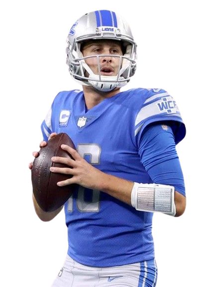

PREDICTIONS
Home
About
Predictions
Stats
Passing
Receiving
Rushing
Scoring
NFC Championship Predictions
The Detroit Lions will win 28-24

AFC Championship Predictions
The Baltimore Ravens will win 21-17